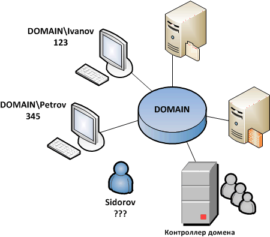

собрание участников безопасности (все объекты Active Directory), имеющих единый центр (который называется контроллером домена), использующий единую базу, известную как Active Directory, начиная с Windows 2000 , Active Directory Domain Services в Windows Server 2008 и Server 2008 R2, также известный как NT Directory Services на NT операционных системах Windows, или NTDS (то есть учётные записи находятся не на каждом в отдельности компьютере, а на контроллере домена, т. н. сетевой вход в систему), единую групповую и локальную политики, единые параметры безопасности (применимо к томам с файловой системой NTFS), ограничение времени работы учётной записи и прочие параметры, значительно упрощающие работу системного администратора организации, эксплуатирующей большое число компьютеров. Также становится возможным создать для каждого аккаунта перемещаемый профиль, который будет храниться на выделенном для профилей сервере. В результате пользователи могут работать со своим «Рабочим столом», «Моими документами» и прочими индивидуально настраиваемыми элементами с любого компьютера домена. Стоит заметить, что при больших объёмах профиля время входа пользователя в систему может быть значительно увеличено. В отличие от рабочих групп, работающих по принципу одноранговой сети, домен реализует клиент-серверную модель. Некоторые операционные системы, не входящие в семейство Windows, так же поддерживают работу в домене Windows NT, в том числе могут быть сконфигурированы в качестве контроллера домена. Такие возможности предоставляет пакет программ Samba.
